经典书导读 8 领域 · 170 本精选 · 豆瓣高分核实版
软件工程 · 系统设计 · UI/UX · 产品经理 · 中国历史 · 建筑学 · 艺术 · 主理人五星精选。每本书：总体观点 × 核心观点 × 全书结构，短句配例子。
软件工程10 本
软件工程就是研究怎么把写代码这件事，从“一个人灵光一闪”变成“一群人稳定交付”的学问——管的不只是代码，更是人、进度和复杂度。

01. 《人月神话》
IBM 超级大项目的血泪总结：软件项目为什么总延期，加人为什么救不了它。

02. 《人件》
软件项目最大的问题不在技术，在人。怎么管好人这个最贵资产，而不是把程序员当零件用。

03. 《代码大全（第2版）》
程序员案头武功秘籍：从变量命名到系统集成，教你把代码写得又结实又好懂。

04. 《程序员修炼之道》
程序员的内功心法：不只教写代码，更教怎么思考、怎么跟人打交道、怎么持续进步。

05. 《重构：改善既有代码的设计》
把“能跑但难看”的代码，一小步一小步改成“好看又好改”：不改变功能，只改善结构。

06. 《代码整洁之道》
Bob 大叔手把手教你写出“人能看懂”的代码：命名、函数、注释、格式，条条都是血泪经验。

07. 《设计模式：可复用面向对象软件的基础》
GoF 四位大神总结的 23 个“前人踩坑换来的套路”：识别反复出现的问题，直接用被验证过的方案，不用重新发明轮子。

08. 《UNIX编程艺术》
讲“怎么写出像 UNIX 那样优雅、耐用、历久弥新软件”的设计哲学书。

09. 《编程珠玑》
用真实故事教你“怎么把程序写对、写快、写小”的算法思维书。

10. 《领域驱动设计》
在一团乱麻的复杂业务里，用“模型”把业务理清楚、让代码跟上业务的设计方法论。
系统设计10 本
系统设计是研究“怎么把软件系统搭得又稳、又快、还好改”的学问：数据放哪、机器挂了怎么办、用户涨十倍怎么办、代码越写越乱怎么办——这些问题的答案，都归它管。

11. 《数据密集型应用系统设计》
数据系统的内功心法：数据库、缓存、消息队列看似五花八门。底层都在回答同一个问题——数据怎么存、怎么传、怎么算。

12. 《架构整洁之道》
好架构跟用什么框架、数据库没关系。关键是把“做什么生意”的代码和“用什么技术”的代码分开，让生意逻辑不被技术细节绑架。

13. 《微服务设计》
把大系统拆成小而独立的服务，各自独立开发上线：什么时候该拆、怎么拆、拆完怎么管，微服务领域的开山之作。

14. 《企业应用架构模式》
OA、ERP、电商后台这类企业软件怎么写才不乱？前人踩过的坑提炼成“模式词汇表”，架构师案头的词典。

15. 《SRE：Google运维解密》
Google运维团队的心法全公开：怎么让系统又稳又能快速迭代。运维不是救火，是工程。

16. 《发布！软件的设计与部署》
测试环境好好的，一上线就崩？这本书专讲“生产环境”这头怪兽：它怎么杀死你的系统。以及怎么设计才能活下来。

17. 《大型网站技术架构：核心原理与案例分析》
网站从小做到大，架构怎么跟着变：作者在阿里当过架构师，把淘宝这些大网站踩过的坑总结成人人能用的方法。

18. 《凤凰项目：一个IT运维的传奇故事》
用小说讲DevOps：IT经理临危受命90天，靠“三步工作法”把烂摊子变成高效团队。

19. 《微服务架构设计模式》
微服务“模式词典”：拆服务、服务间通信、分布式事务这些难题，一个个给出经过验证的解法。

20. 《架构即未来》
“AKF扩展立方体”：系统撑不住了，加机器、拆功能还是分数据？三个轴指方向。
UI/UX 设计10 本
说白了，UI/UX 设计就是研究“人怎么用东西”的学问：UI 管“长什么样”，UX 管“用起来顺不顺”。目标只有一个——让用户用产品时不费脑子、不犯错，还觉得顺手。

21. 《点石成金》
做网站和 App 的实战小册子：别让用户动脑子，薄、幽默、句句拿来就能用。

22. 《用户体验的要素》
用“五个层面”把产品工作从战略讲到视觉。产品经理和设计师的共同语言。

23. 《设计心理学》
从“门总推错”讲起：用户犯错通常不是人笨，是设计蠢，好设计顺着人的心理来。

24. 《交互设计精髓》
交互设计的开山之作：别堆功能，先搞清用户想干成什么事。

25. 《写给大家看的设计书》
非设计师的救星：四个简单原则，让你的 PPT、海报从“业余”变“专业”。

26. 《设计师要懂心理学》
100 条“人就是这样”的心理学结论，每条翻译成一句设计该怎么做。

27. 《情感化设计》
好用只是及格：让人掏钱、念念不忘的，是设计里的“情绪价值”。

28. 《认知与设计》
把认知心理学翻译成界面设计规则：大脑怎么工作，界面就该怎么设计。

29. 《微交互》
伟大的产品是细节堆出来的。这本书教你设计只有一秒钟的交互：开关、点赞、解锁、提示音。

30. 《简单法则》
MIT 教授用十条法则讲简约。简约不是东西变少，是可以学会的设计手艺。
产品经理10 本
产品经理就是那个要想清楚“做什么产品、为谁做、为什么值得做”的人——夹在用户、技术和生意之间，把一个个想法变成大家愿意用的产品。

31. 《启示录》
产品经理实战手册：别闷头做功能，先验证用户要不要、能不能做出来，再动手。

32. 《精益创业》
创业别靠赌：用最小成本、最快速度做实验，验证你的想法到底有没有人买单。

33. 《俞军产品方法论》
中国“产品经理教父”俞军，把做产品还原成几个可以算账的公式：用户价值、交易设计、决策方法。

34. 《人人都是产品经理》
阿里出身的苏杰，用一个真实项目的完整经历，带你走完从需求到上线的全过程——中国产品经理的入门圣经。

35. 《创新者的窘境》
为什么管理越优秀、越听客户话的大公司，越容易被新技术干掉？哈佛教授用三个行业的真实历史回答这个问题。

36. 《上瘾：让用户养成使用习惯的四大产品逻辑》
为什么你一无聊就想刷手机？作者把Facebook、Twitter、Pinterest们让人“上瘾”的套路，提炼成了一个四步循环模型。

37. 《增长黑客》
“增长黑客”发明人亲笔：用数据和一次次小实验，让用户量滚雪球一样涨起来。而不是砸钱买广告。

38. 《精益数据分析》
教创业者看数据的书：别再盯虚荣指标了，每个阶段只看一个最重要的数。

39. 《用户故事与敏捷方法》
敏捷开发写需求的“圣经”：别写几十页没人看的文档了。一张小卡片加面对面交谈，再写下验收标准，就够了。

40. 《定位》
营销学“圣经”：别再死磕“我的产品更好”。商战打的是用户脑子里的位置——谁先占住一个词，谁就赢。
中国历史10 本
中国历史是读懂中国人行为逻辑与制度演进的底层密码：官僚机器怎么运转、权力与民意如何博弈、大一统帝国的得与失——这些过去的经验，至今依然在深刻塑造我们的当下。

41. 《中国历代政治得失》
五堂课讲透汉、唐、宋、明、清五朝制度演变：制度必须结合历史情境，防弊之法往往反成新弊。

42. 《万历十五年》
平淡无奇的一年，却写尽了大明帝国制度性死结与个人奋斗的彻底破产。

43. 《叫魂：1768年中国妖术大恐慌》
盛世之下的一场剪辫妖术谣言，扯下了专制君权、常规官僚与底层互害的遮羞布。

44. 《天朝的崩溃：鸦片战争再研究》
基于原始中英档案的冷酷还原：鸦片战争的惨败，绝不是因为几个奸臣使坏。

45. 《潜规则：中国历史中的真实游戏》
写清了中国传统社会在道德和法律之下，真正支配官场与民间的隐秘利害法则。

46. 《置身事内：中国政府与经济发展》
看清中国当代经济奇迹与深层困局的底层逻辑：地方政府不是裁判，而是亲自下场的超级重资产玩家。

47. 《明朝那些事儿》
用最鲜活的现代白话写透两百七十六年大明风云：历史本由活生生的人性写就，成功只有一种。

48. 《波峰与波谷：秦汉魏晋南北朝的政治文明》
七百年政治制度的起伏脉络：从官僚帝国波峰，跌入门阀士族低谷，再经北朝涅槃重登隋唐巅峰。

49. 《显微镜下的大明》
从六起基层民间公案档案，透视明代帝国的毛细血管运转与官僚利益博弈。

50. 《国史大纲》
抗战烽火中写就的通史宗师经典：对本国历史抱有一种温情与敬意，读懂中华文明的生生不息。
建筑学10 本
建筑学研究的是“空间如何容纳人与生活”的学问：从梁架营造到现代钢筋水泥，从单个房间的尺度到整条街道的呼吸——好建筑从不在于炫技，而在于让人在其中安居与从容。

51. 《华夏意匠：中国古典建筑设计原理分析》
用现代建筑学原理重新解剖中国古典建筑：院落是核心细胞，木构架是比西方早千年的模数化预制体系。

52. 《建筑空间组合论》
中国建筑教育第一经典教材：建筑的本质是空间，空间序列犹如凝固的交响乐。

53. 《梁思成中国建筑史》
中国现代建筑学奠基之作：野外艰险测绘打破日本学界断言，确立中国木结构建筑的文法体系。

54. 《走向新建筑》
现代主义建筑的旷世独立宣言：房屋是住人的机器，抛弃学院派虚伪的古典装饰！

55. 《外部空间设计》
空间大师教你做有呼吸感的环境：外部空间绝不是残留空地，而是被精心雕琢的“积极空间”。

56. 《建筑语汇》
把模糊的建筑灵感转化为清晰图形的速查字典：图解思考是建筑师最核心的思维武器。

57. 《街道的美学》
街道是城市的起居室：从巴黎香榭丽舍到京都小巷，读懂真正宜人有温度的街道活力。

58. 《建筑：形式、空间和秩序》
全球建筑院校人手一本的视觉语法圣经：点线面体、空间组织与六大秩序法则。

59. 《建筑的复杂性与矛盾性》
后现代建筑运动的独立宣言：针锋相对反击“少就是多”，旗帜鲜明喊出“少就是无聊”！

60. 《建筑模式语言》
设计界与软件工程跨界划时代圣经：归纳 253 个空间设计模式，让普通人也能创造鲜活宜居的环境。
艺术10 本
艺术不是少数人的高深玄学，而是人类感知世界与表达自我的最高形式：从原始洞穴壁画到现代主义流派——学会观看艺术，本质是学会如何更敏锐、更丰盈地看待生活本身。

61. 《艺术的故事》
全世界最负盛名的艺术史入门第一书：实际上没有艺术这种东西，只有艺术家。

62. 《美的历史》
博学宗师艾柯纵论西方两千年审美变迁：美从来不是客观公式，而是时代文化的投射面具。

63. 《观看之道》
二十世纪最具杀伤力的视觉批评经典：观看先于语言，但我们的眼睛早已被意识形态操控。

64. 《艺术与视知觉》
格式塔心理学在艺术领域的终极圣经：视觉即思考，静止画面中蕴含着真实的心理力学张力！

65. 《如何看一幅画》
普通人逛美术馆的破冰解药：撕掉艺术史文凭的装腔作势，从第一眼直觉读懂画中玄机。

66. 《詹森艺术史》
半个世纪全球艺术史教学第一权威巨著：建筑、雕塑与绘画三位一体，建立最坚实宏大的文明骨架。

67. 《写给大家的中国美术史》
蒋勋用最温润深情的文字唤醒东方美学基因：美是双手劳作的温度，是山水之间的心灵安顿。

68. 《图说中国绘画史》
海外中国艺术史巨擘传世名著：跳出传统笔墨玄学，用西方图像学清晰解剖中国画两千年风格演变之河。

69. 《中国绘画三千年》
中美顶尖艺术史大家联袂巨制：融汇故宫鉴藏考据与西方现代视觉学，全景呈现三千年画史宏图。

70. 《艺术哲学》
实证主义文艺学的经典奠基巨著：傅雷名译，艺术品是特定种族、时代与环境孕育的精神植物。
主理人五星精选100 本
来自豆瓣主理人的 100 本「五星力荐」私房书单：跨越社会思想、生活美学、心理认知、文学诗歌与科技理性——每一本都是经过时间与反复翻阅沉淀的挚爱之作。
71. 《你好小朋友》
80年代初中国童年影像史诗：日本摄影师秋山亮二用禄来双反与柯尼卡胶卷，定格了改革开放之初最清澈坦荡的稚子笑颜。
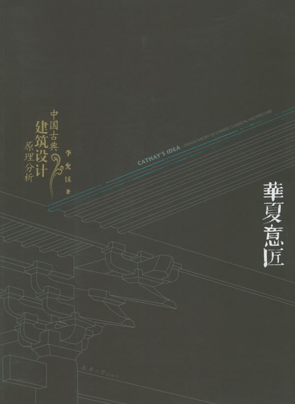
72. 《华夏意匠》
中国古典建筑的底层理论基石：建筑学家李允鉌破除西方中心主义，系统建立属于中华营造体系的独立设计美学与空间逻辑。

73. 《最后的耍猴人》
边缘江湖人的末路挽歌：摄影师马宏杰历时十二年贴身记录河南新野耍猴艺人的流浪史，直面底层生存与现代文明的残酷碰撞。
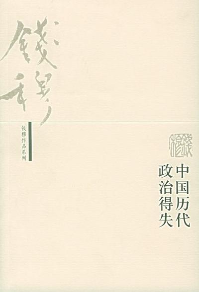
74. 《中国历代政治得失》
钱穆先生的中国制度史经典：跳出“全盘专制黑暗”的近现代偏见，用五次讲座精辟讲透汉唐宋明清两千年制度演变的理性与得失。

75. 《城记》
首都规划半世纪的悲剧史诗：新华社记者王军历时十年调阅绝密档案与采访亲历者，详尽还原北京古城消逝与梁陈方案的历史风云。

76. 《5%的改变》
心理学者李松蔚的破局之书：放弃一次性脱胎换骨的宏大执念，哪怕只在行动上撬动5%的微小改变，生活系统就会发生连锁反应。

77. 《小家大变局》
居住空间重塑指南：前万科主创建筑师逯薇直面中国家庭结构巨变，以“大方厅”革命打破传统客厅局限，重构充满温情的全家聚居场。

78. 《可能性的艺术》
比较政治学通识力作：政治学者刘瑜带你穿越全球数十个国家的治理实践，在比较的视野中勘测政治发展的边界、阵痛与多重可能。

79. 《运气的诱饵》
赌博机背后的上瘾工程学：人类学家舒尔深入拉斯维加斯十五年，彻底扒光现代赌场与算法工程师如何设计“沉浸区”剥削人类心智。

80. 《小家，越住越大3》
高颜值家居实操宝典：建筑师逯薇破除盲目跟风与名牌堆砌的家装陷阱，用科学公式化解配色、灯光、材质与墙面搭配难题。

81. 《小家，越住越大2》
居住痛点靶向破解：逯薇深入中国家庭最拥挤的厨卫衣帽间三大战区，以毫米级尺寸精算与人体工学，终结家务劳作与收纳噩梦。

82. 《刘擎西方现代思想讲义》
现代人精神危机的哲学解毒剂：刘擎教授系统梳理韦伯、尼采、萨特、阿伦特等近二十位大师思想，为虚无时代的灵魂寻找确凿安顿。
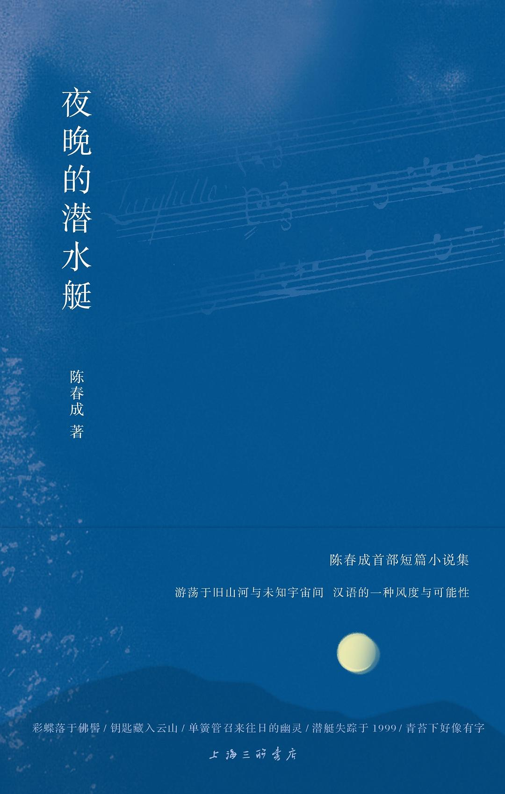
83. 《夜晚的潜水艇》
当代汉语小说的想象力巅峰：青年作家陈春成用纯正古典的汉语言语感与天马行空的灵动构思，在现实与梦境的缝隙筑起九座绝美避难所。

84. 《筚路维艰》
中国现代道路五次转折实录：历史学家萧冬连以严谨史笔复盘新中国成立以来的重大路径选择，透视体制探索的曲折与代价。

85. 《中国国家治理的制度逻辑》
洞察官僚体制运作的当代经典：社会学家周雪光提出“一统体制与有效治理”核心矛盾，深度透视基层政府共谋、运动式治理与名实分离的制度真相。

86. 《优势谈判》
商业与生活博弈的实战兵法：国际谈判大师罗杰·道森倾囊相授，系统拆解开局、中局到终局的数十套心理招数与双赢心法。
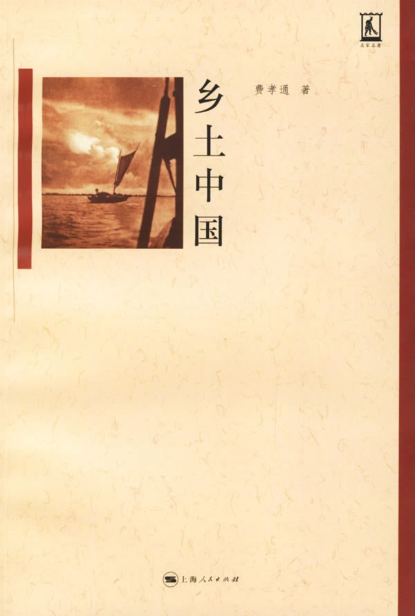
87. 《乡土中国》
读懂中国社会的百年密码：人类学巨擘费孝通仅用数万字精悍小册，提炼出差序格局、熟人社会与礼治秩序等颠扑不破的底层洞察。

88. 《现代艺术150年》
现代艺术通识第一书：BBC前艺术总编威尔·贡培兹以幽默毒舌之笔，梳理从马奈到班克西的流派接力，彻底讲透“这到底好在哪”。
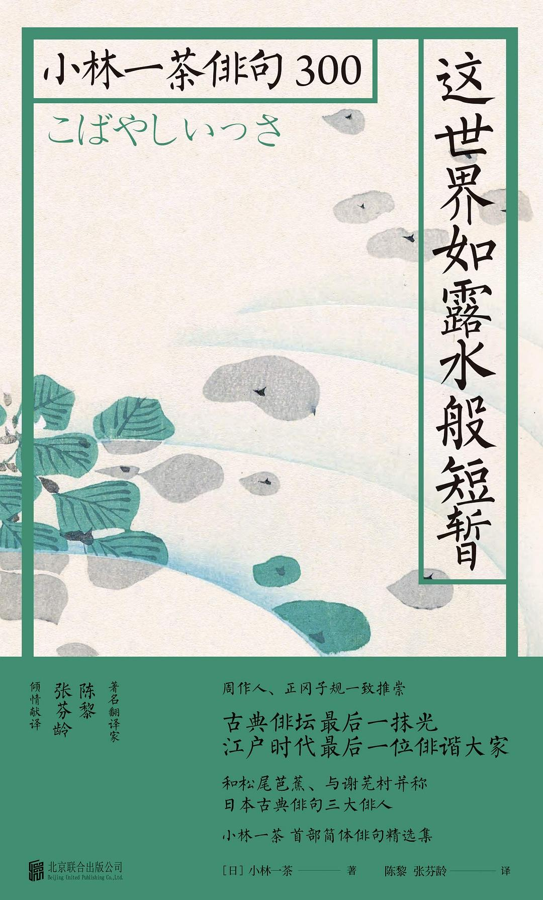
89. 《这世界如露水般短暂》
江户俳句三圣小林一茶的生命哀歌：在坎坷飘零与接连丧妻丧子的绝望岁月中，以纯真幽默的短句万物同悲、温柔拥抱微小生灵。
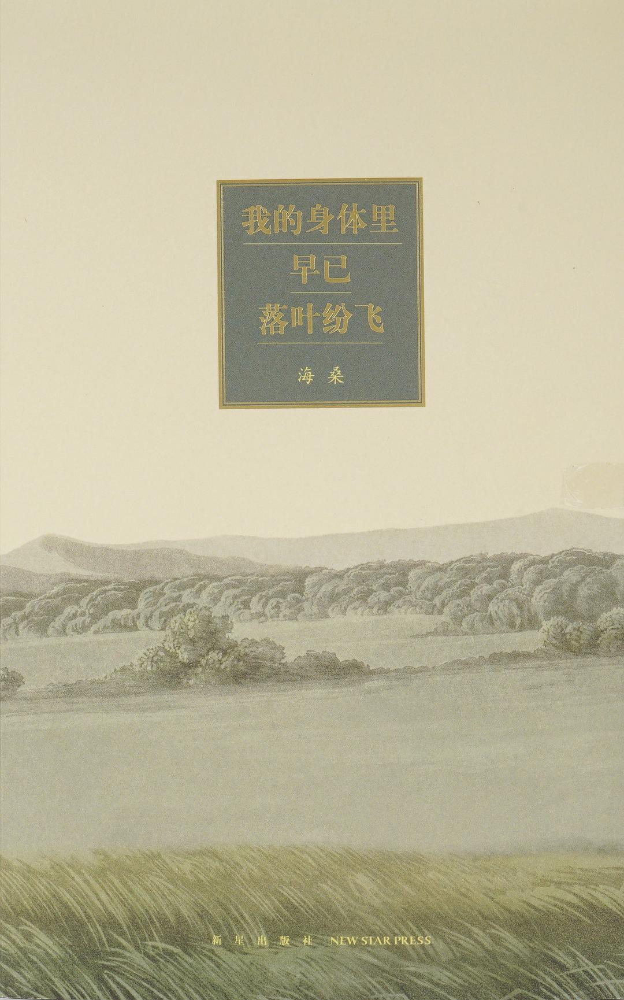
90. 《我的身体里早已落叶纷飞》
隐居诗人海桑的生命沉淀之诗：洗尽铅华、直面中年的衰老与衰退，用清澈如泉的短句安顿疲惫灵魂与平淡日常。

91. 《你不知道的JavaScript (上卷)》
前端JS核心机制底层重塑：Kyle Simpson直击作用域、闭包、this指向与对象原型链，彻底终结浅尝辄止与诡异Bug。

92. 《穿墙透壁》
中国古建筑手绘解剖神作：古建筑泰斗李乾朗历时二十年，以惊绝的51幅剖面透视水彩图，为千年营造打开X光级的空间透视之门。
93. 《无声告白》
华裔跨种族家庭的情感窒息悲剧：伍绮诗以悬疑笔触撕开“模范家庭”伪装，直面父母将未尽梦想强加子女的致命控制与无声窒息。

94. 《图解密码技术》
现代信息安全启蒙第一书：日本科普宗师结城浩用生动图解与爱丽丝鲍勃故事，将对称密码、公钥体系与HTTPS安全基石彻底讲透。

95. 《JavaScript高级程序设计（第3版）》
前端工程师的红宝书圣经：Nicholas C. Zakas集大成之作，系统筑牢ECMAScript语法底座、DOM/BOM浏览器环境与事件异步机制。
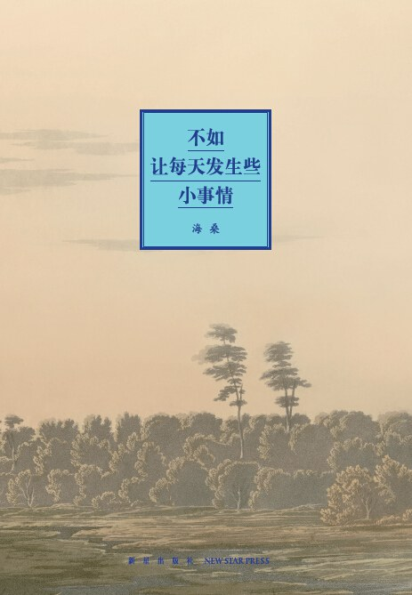
96. 《不如让每天发生些小事情》
诗人海桑的日常低语：把目光从宏大叙事收回，在煎蛋、抱紧、生病与落叶等琐碎小事里安顿身心。

97. 《亲密关系》
亲密关系领域的科学圣经：用严谨的心理学实证研究，撕开关于爱情、吸引力、冲突与背叛的情感迷思。
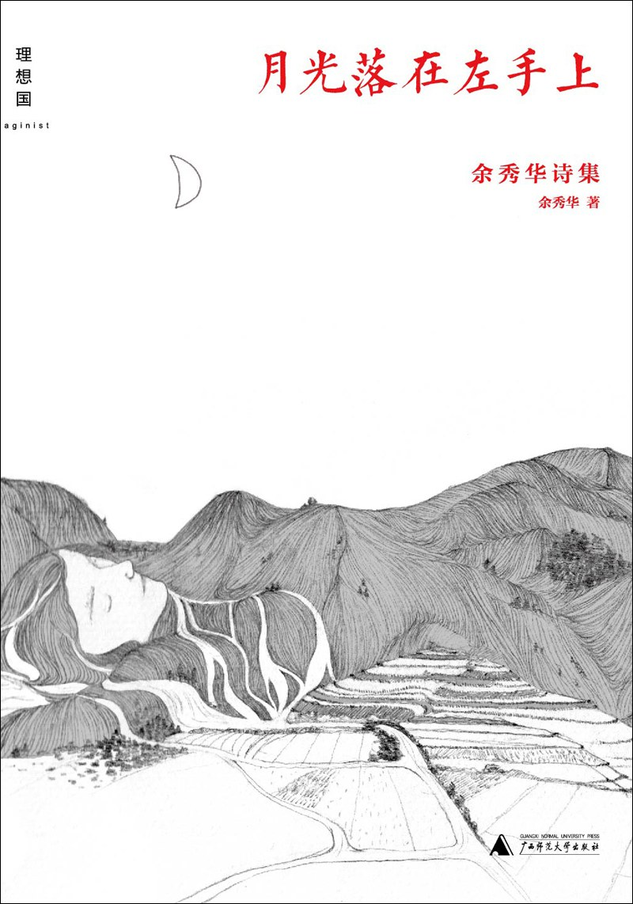
98. 《月光落在左手上》
农妇与脑瘫患者躯壳下的烈火诗魂：以赤裸的肉身、疼痛与对爱的绝望渴望，炸碎人间的伪善与道德禁锢。
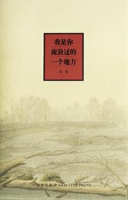
99. 《我是你流浪过的一个地方》
读库张立宪发掘的隐秘诗篇：在喧嚣尘世边缘，用最干净的白话记录爱、死亡与平凡生活的圣光。

100. 《不必读书目》
杂文大家刀尔登的祛魅之作：以现代常识和犀利毒舌，把国学神坛上的古圣先贤一一拉回人间。
101. 《下面，我该干些什么》
中国版《局外人》：一场没有仇恨、没有利益、仅为对抗无聊与虚无而展开的残酷杀戮与逃亡演算。
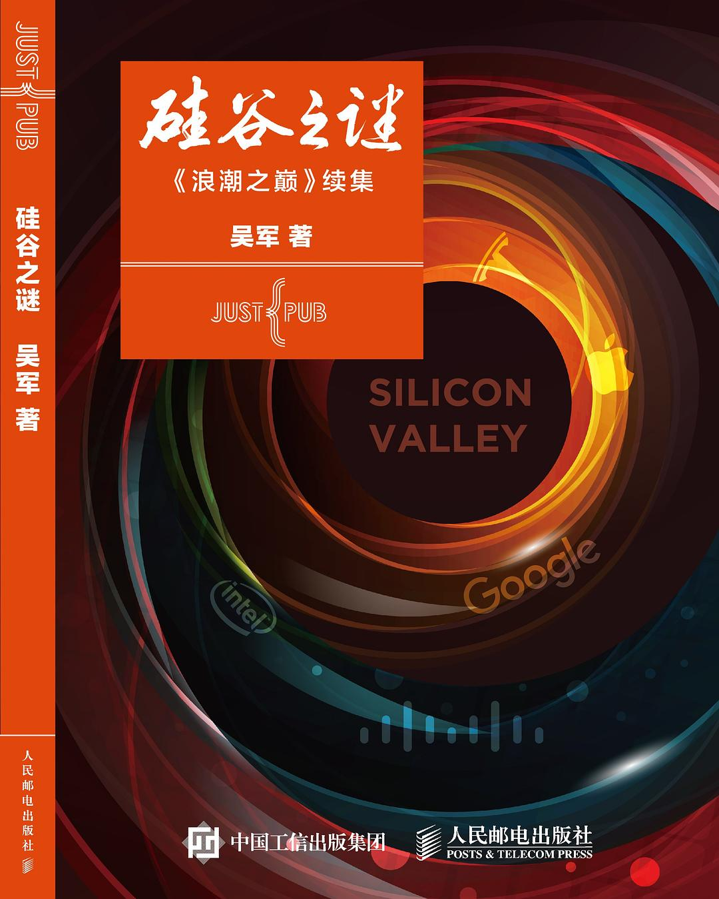
102. 《硅谷之谜》
探寻创新奇迹的底层操作系统：为什么全世界都想复制硅谷，却唯有硅谷长盛不衰？

103. 《自卑与超越》
个体心理学奠基之作：破除弗洛伊德式的宿命论，用“自卑感与补偿”重新拿回塑造自我的主动权。

104. 《自私的基因》
演化生物学颠覆之作：个体不过是基因制造的生存机器，利他与博弈的背后全是不朽分子的生存算法。

105. 《原来你非不快乐》
词坛教父的禅意救赎随笔：从抑郁心魔与红尘执念中突围，参透“安乐比快乐更重要”的心灵心经。

106. 《社会性动物》
当代社会心理学的无冕之王：用一系列震撼实验，揭开人类在群体中的从众、偏见与自我辩护。
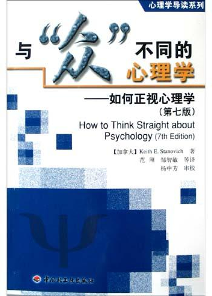
107. 《与“众”不同的心理学》
批判性思维与科学素养的试金石：给市面上泛滥的伪心理学致命一击，讲透现代实证科学的底层逻辑。

108. 《撬动幸福》
行为经济学巨擘的幸福测量学：用科学实验颠覆“财富等于快乐”的错觉，教你用有限资源撬动最大幸福。

109. 《浪潮之巅》
科技商业史上最宏大的全景史诗：看懂信息产业百年生死沉浮，掌握科技弄潮儿兴衰的底层律动。

110. 《王小波全集（第一卷 杂文）》
当代汉语文学最清醒的智性标杆：用黑色幽默与纯粹理性，横扫愚蠢、道德狂热与思想禁锢。

111. 《销售巨人》
B2B 大客户复杂销售的圣经：打破传统逼单神话，用一套严密的 SPIN 提问逻辑彻底拿下大订单。
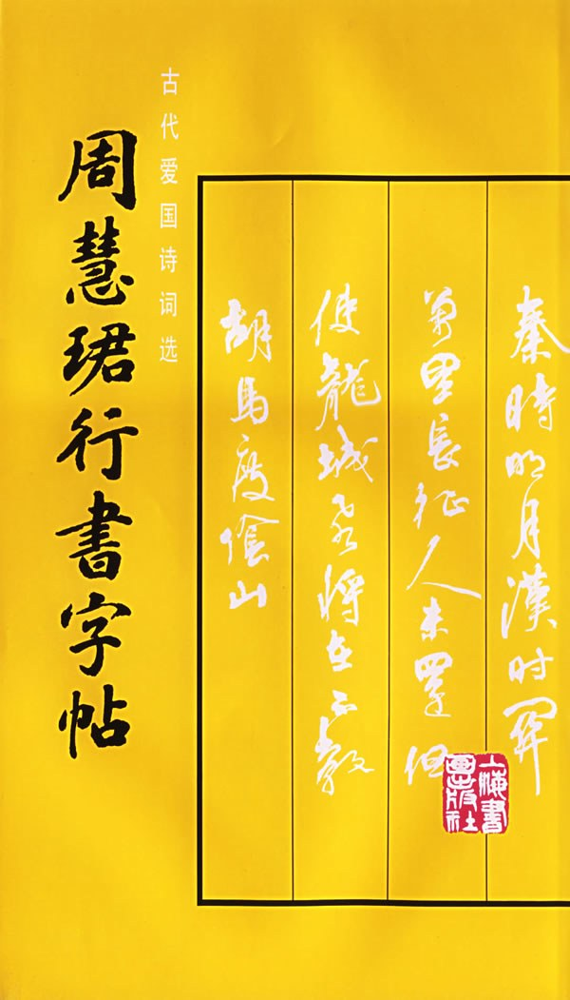
112. 《周慧珺行书字帖》
当代碑帖融合的行书巅峰：笔力雄健跌宕、元气淋漓，影响了整整几代中国人的书法美学启蒙。

113. 《男人的伎俩 女人的道行》
亲密关系情商必修课（再版名《爱的五种能力》）：走出两性控制与博弈的死局，用真正成熟的心智经营幸福。
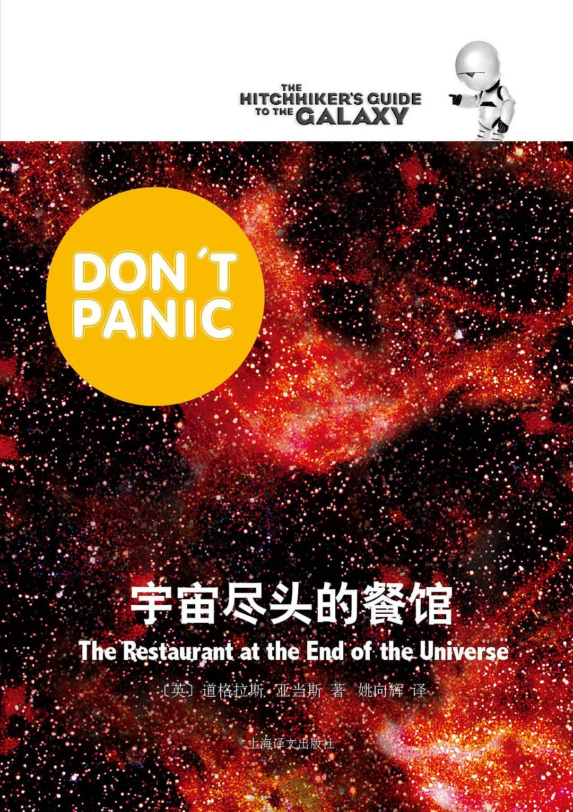
114. 《宇宙尽头的餐馆》
《银河系漫游指南》绝妙续作：在宇宙毁灭的倒计时烟火中吃顿大餐，用荒诞幽默解构一切存在的严肃与崇高。

115. 《出神》
极度坦诚的私人灵魂标本：在都市浮躁的喧嚣声中，用敏锐至极的内省文字安顿飘忽不定的自我。

116. 《我讲个笑话，你可别哭啊》
当代市井浮世绘与底层奇人传：用最损最逗的京味段子，讲透小人物笑中带泪的辛酸与尊严。

117. 《观念的水位》
当代最具影响力的政治学随笔：当民主与法治的观念水位悄然上升，任何旧体制的堤坝都将无处藏身。
118. 《亮剑》
真正完整的亮剑精神史诗：前半部抗日烽火铁血鏖战，后半部特殊岁月将星悲歌与风骨绝唱。
119. 《三体Ⅱ》
中国科幻的无上巅峰：在四光年的星际绝境中，以“黑暗森林法则”推演人类文明生死存亡的终极博弈。
120. 《世间的盐》
当代汪曾祺式的市井风物散文：用清隽雅致的闲适笔墨，煨出一锅热气腾腾的人间烟火与食俗掌故。
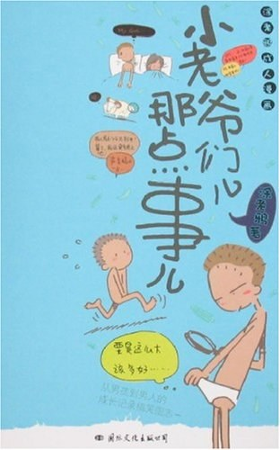
121. 《小老爷们儿那点事儿》
一部用极度坦诚的粗粝笔触画出的青春发育备忘录，打捞起整整一代中国男人的胡同成长与荷尔蒙记忆。

122. 《把话说到心窝里》
刘墉教你把话说到对方心坎里的沟通心法：不靠阿谀奉承，靠洞察人性软肋与给足体面。

123. 《公正》
哈佛大学殿堂级哲学课：用电车难题撕开道德直觉，带你在功利、自由与美德的激烈交锋中重建正义底线。

124. 《〈华尔街日报〉是如何讲故事的》
《华尔街日报》资深头版特稿编辑倾囊相授的写作圣经：把枯燥冷硬的商业趋势，改造成引人入胜的人性故事。

125. 《江城》
何伟笔下的九十年代三峡小城记忆：用平视、克制且温存的目光，记录巨变前夕普通中国人的坚韧生活。

126. 《寻路中国》
一辆租来的切诺基驶入现代中国的心脏：从长城残垣、京郊农家到江南工厂，全景记录草莽年代的造富狂潮与阵痛。
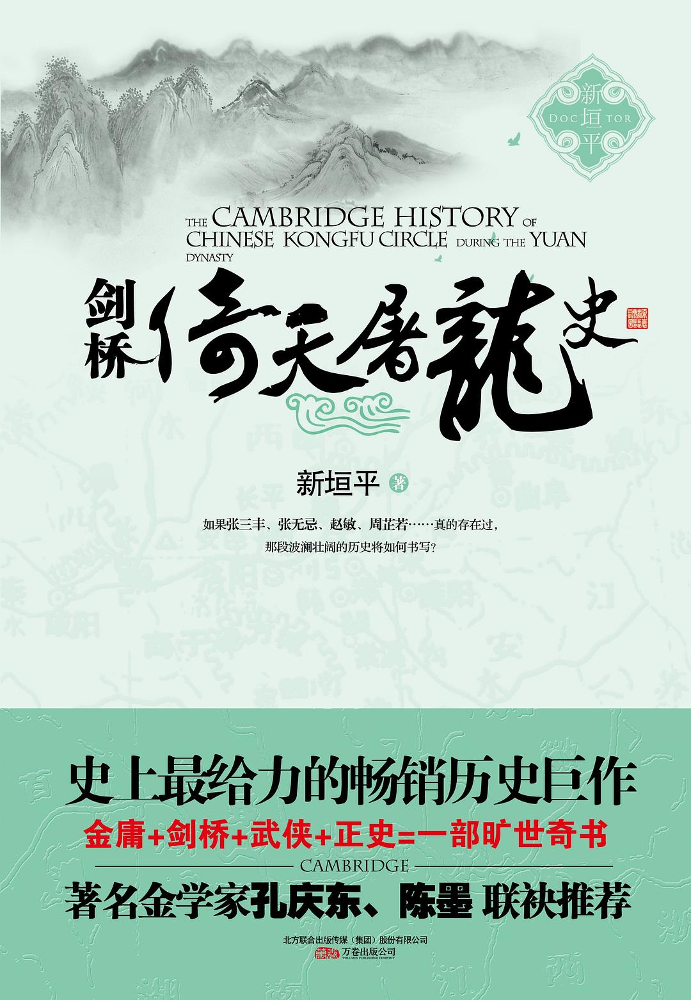
127. 《剑桥倚天屠龙史》
用严肃西方汉学与唯物史观戏仿金庸江湖：一本正经地将倚天屠龙神话解构为元末地缘政治与秘密宗教革命史。

128. 《政治科学》
全球公认最经典、最接地气的政治学入门通识：带你穿透喧嚣宣传，看透权力运作、制度博弈与国家治理的底层逻辑。
129. 《俺爹俺娘》
历时三十年、一万两千张底片凝固的乡土绝唱：一位农民摄影师用镜头向生生不息的中国父母深情叩首。

130. 《激荡三十年（下）》
1993至2008年中国商业风云下卷：国企改制、网络破晓、资本狂欢与大国崛起背后的激荡大考。
131. 《一九八四·动物农场》
董乐山与傅惟慈联袂翻译的奥威尔经典合璧：用冷峻手术刀剖开极权肌理、思想监控与语言污染的传世预警。

132. 《激荡三十年（上）》
1978至1992年中国商业破冰史：从小岗村红手印到南巡讲话，草莽英雄在体制裂缝中杀出一条血路的激荡岁月。

133. 《魔镜》
荷兰数学家带你步入版画巨匠埃舍尔的几何迷宫：用视觉悖论、不可能空间与无限循环颠覆人类感知常识。
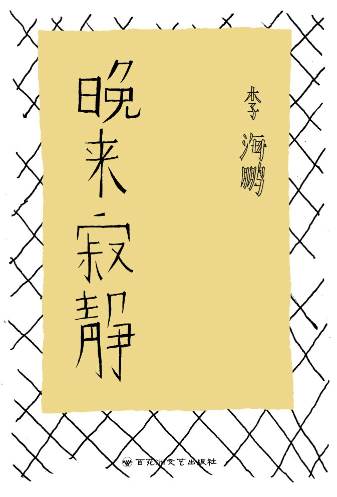
134. 《晚来寂静》
特稿大师李海鹏的长篇自传体小说：用极其精纯冷冽的汉语文风，打捞东北衰落厂区少年的残酷青春与终极虚无。
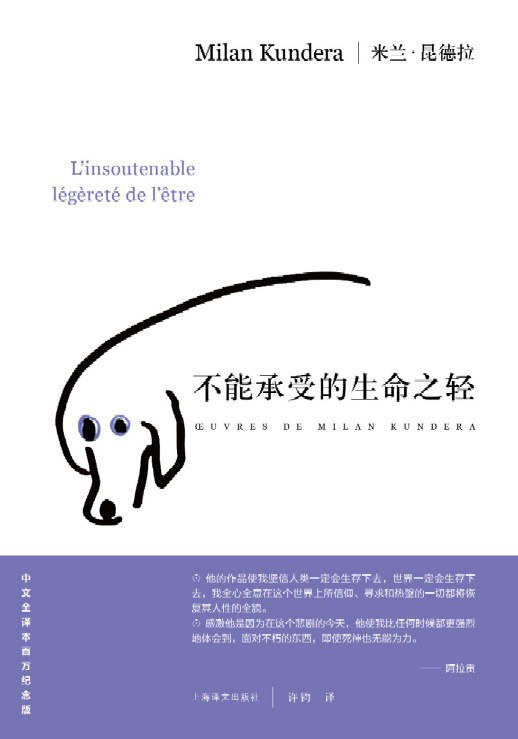
135. 《不能承受的生命之轻》
昆德拉的哲学小说丰碑：在布拉格之春的废墟上，探讨轻与重的两难困境、灵与肉的撕裂，以及对媚俗的终极解构。
136. 《动物庄园》
世界文学史上最锋利的政治讽刺寓言：一群农场动物驱逐人类暴政，却在恶犬护卫下的猪群统治中滑向更深深渊。
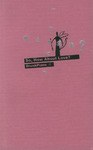
137. 《那么，爱呢？》
刘瑜在哥伦比亚大学求学时期的都市情感散文：用毒舌、自嘲与智性幽默，解构现代爱情神话与都市孤独。
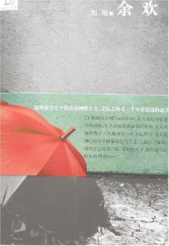
138. 《余欢》
刘瑜的长篇小说力作：用荒诞冷幽默剖开体制内小人物的庸碌生活，写尽中年男性的虚荣、懦弱与精神窒息。

139. 《时间触发嵌入式系统设计模式》
嵌入式工程领域的殿堂级设计范式：彻底摒弃不可预测的事件触发与抢占乱局，用确定性时间触发架构铸就高可靠系统。

140. 《目送》
龙应台沉淀一生的生命之书：在父亲的逝去、母亲的失智与儿子的背影中，参透世间所有的缘分不过是渐行渐远的目送。

141. 《我也有一个梦想》
林达近距离看美国系列重磅之作：在黑人奴隶制与民权运动的漫长历史回廊中，见证一个大国如何艰难兑现人人生而平等的立宪承诺。

142. 《别闹了，费曼先生》
诺贝尔物理学奖得主的顽童自传：用永不熄灭的赤子好奇心拆解权威，在修收音机、撬保险箱和敲桑巴鼓中玩转世界。

143. 《闪开，让我歌唱八十年代》
《读库》主编老六张立宪的青春备忘录：用滚烫狂放的江湖文字，追忆八十年代绿皮车、摇滚乐与理想主义的黄金余温。
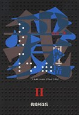
144. 《我爱问连岳Ⅱ》
连岳犀利冷静的情感答疑录第二辑：以常识、理性、产权意识与个人独立为手术刀，精准切除亲密关系中的道德自恋与软弱。

145. 《历史深处的忧虑》
林达近距离看美国系列开山鼻祖：以书信体深入浅出拆解辛普森案与第一修正案，带中国人看清自由背后的制度代价与深层忧虑。
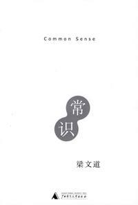
146. 《常识》
用最朴素的现代公民常识，戳破转型期社会的集体狂热、权力谎言与道德绑架。
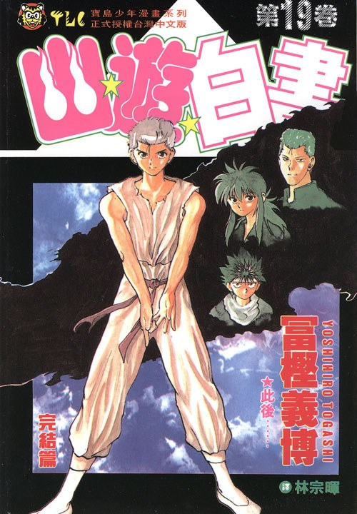
147. 《幽游白书（全19册）》
从灵界侦探到魔界称霸：富坚义博打破王道少年漫脸谱、用高智商博弈与宿命感重塑的暗黑格斗神作。
148. 《机器猫哆啦A梦23》
藤子·F·不二雄单行本精华之作：用脑洞大开的未来道具照见人性贪婪、友情分寸与自我成长的隐秘法则。
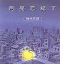
149. 《月亮忘記了》
921大地震后治愈整个华人世界的纯净绘本：在受创的世界里，受伤的男孩与失忆的月亮用温柔彼此照亮。

150. 《吃的真相》
清华生物化学博士用严谨实验数据打破民间养生迷信与商家营销套路，建立理性健康的现代饮食观。

151. 《做最好的自己》
融合苹果、微软与Google管理精髓的青年成长手册：用“成功同心圆”模型指导大学生与职场新人做最好的自己。
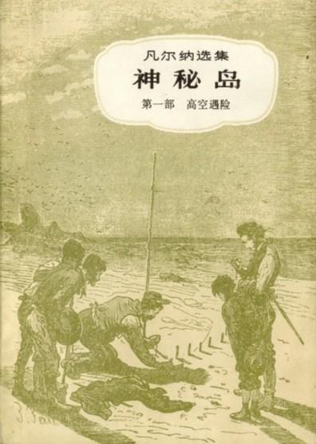
152. 《神秘岛（全三册）》
五名北方俘虏飘落荒岛凭借数理化知识重建现代工业文明，并揭开尼摩船长终极秘密的硬核科幻史诗。
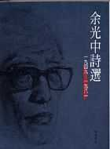
153. 《余光中詩選》
当代中文诗坛泰斗半世纪代表作精粹：将古典诗词的音韵节律、现代主义的奇崛意象与深沉家国乡愁熔铸一炉。
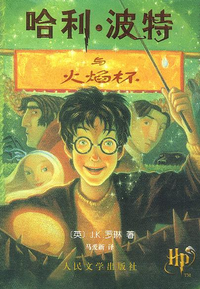
154. 《哈利·波特与火焰杯》
全系列走向黑暗成熟的关键分水岭：三强争霸赛的青春躁动与伏地魔真正复活的残酷成人礼。
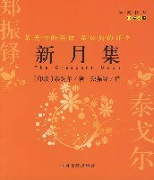
155. 《新月集》
东方诗哲以母爱与童真为琴弦谱写的散文诗篇：借孩童澄澈双眼重新擦亮被世俗功利蒙尘的人性光辉。
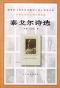
156. 《泰戈尔诗选》
囊括《吉檀迦利》、《飞鸟集》、《园丁集》精髓：以微言大义洞见宇宙苍生与心灵永恒的东方哲学巨擘之作。

157. 《礼仪金说》
人大知名教授金正昆的现代商务与社交礼仪实战宝典：讲透体面分寸感背后的尊重心理与交往技术。
158. 《鹿鼎记》
金庸武侠小说的封笔巅峰与反武侠经典：借市井混混韦小宝在清廷与江湖间的逢源，彻底解构大侠神话与权力虚伪。
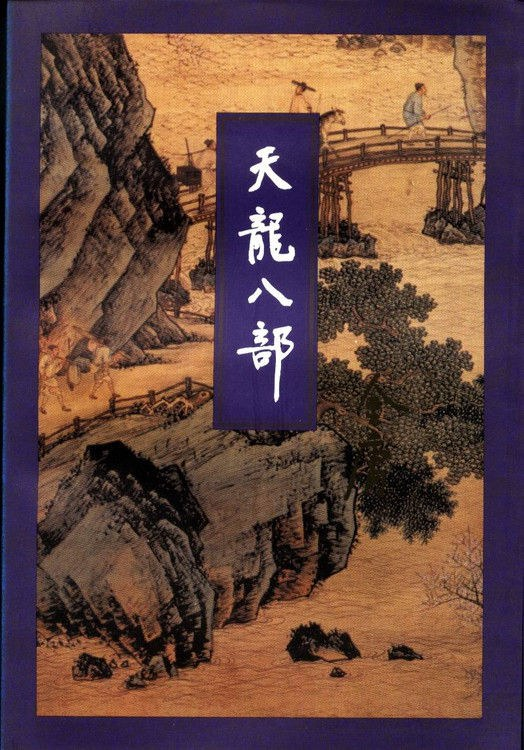
159. 《天龙八部》
宋辽大理吐蕃多民族交锋下的命运交响乐：佛家“有情皆孽，无人不冤”的至高悲剧史诗。
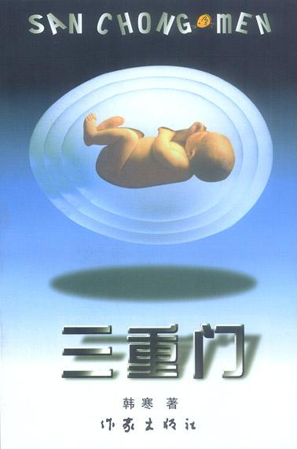
160. 《三重门》
少年韩寒引爆全国的青春长篇：以辛辣讽刺的文笔彻底解构应试教育、虚伪师长与迷茫青涩的青春悸动。

161. 《你不可不知的人性》
华语文坛常青树刘墉的人性解剖刀：用生动故事揭开世俗人际交往中隐秘的自私、嫉妒与防备，学会看破而包容。

162. 《我不是教你诈》
步入社会的避坑自保指南：通过商界与职场人情世故的故事，教你在险恶江湖中防身自保而不作恶。

163. 《电子设计从零开始》
电子工程爱好者的经典入门“红宝书”：打破死背公式教学，用大白话带你从电阻三极管一路通关到单片机系统设计。

164. 《别做正常的傻瓜》
芝加哥大学行为决策学教授揭示人类非理性决策盲区：用心理账户、沉没成本与前景理论让你做个清醒的明白人。

165. 《设计心理学》
全球工业与交互设计圣经：前苹果副总裁唐·诺曼告诉你门推不开、开关按错不是你的错，而是设计出了问题。

166. 《细节决定交互设计的成败》
互联网黄金时代的产品交互实战指南：从按钮微动效、表单智能纠错到导航路径，拆解将产品从“能用”打磨到“好用”的微创新细节。

167. 《读大学，究竟读什么》
撕开象牙塔迷茫的青年逆袭清醒剂：指导当代大学生摆脱混日子套路，建立真刀真枪的自学能力与职场竞争力。

168. 《民主的细节》
政治学学者刘瑜的美国微观观察手记：通过琐碎社会事件剖析现代民主制度的运转齿轮、权力制衡与法治根基。
169. 《送你一颗子弹》
政治学者刘瑜在海外求学执教岁月的灵动随笔：以机智自嘲与俏皮锋芒解剖孤独、爱情、庸俗与当代人的精神困惑。

170. 《佛祖在一号线》
顶尖非虚构特稿宗师李海鹏专栏精选：以冷静克制、华美又悲悯的文字，刺破转型期中国社会的虚妄狂热与底层阵痛。
未找到匹配的图书，试试其他关键词或作者姓名